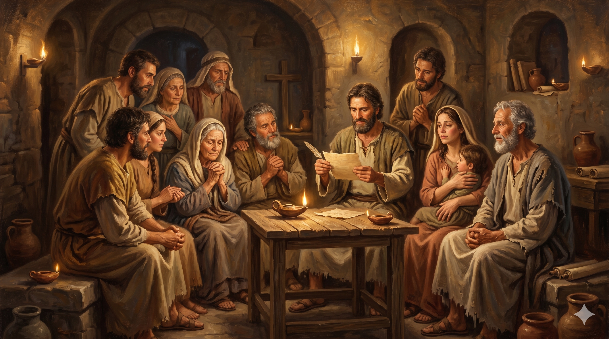

흩어진 나그네들에게 편지를 쓰는 노년의 베드로 — 핍박 속에서도 타오르는 소망의 불꽃, 보지 못하나 사랑하는 주님을 향한 믿음을 기록하다
"우리 주 예수 그리스도의 아버지 하나님을 찬송하리로다 그의 많으신 긍휼대로 예수 그리스도를 죽은 자 가운데서 부활하게 하심으로 말미암아 우리를 거듭나게 하사 산 소망이 있게 하시며 … 예수를 너희가 보지 못하였으나 사랑하는도다 이제도 보지 못하나 믿고 말할 수 없는 영광스러운 즐거움으로 기뻐하니" — 베드로전서 1:3, 8
베드로전서는 흩어진 나그네들, 곧 로마 제국 곳곳에서 핍박과 소외를 겪고 있는 그리스도인들에게 보낸 편지입니다. 편지를 쓴 베드로 자신도 순교가 멀지 않았음을 알고 있었습니다(벧후 1:14). 그런 상황에서 그가 꺼내 든 첫마디가 놀랍습니다. "찬송하리로다!" 탄식도, 위로도, 전략도 아닌 찬송입니다. 이 찬송의 근거는 "산 소망"(Living Hope)입니다. 죽지 않고 살아 있는 소망, 예수 그리스도의 부활로 태어난 소망이 있기에 그는 고난 한가운데서도 하나님을 찬양할 수 있었습니다.
8절에 담긴 고백은 베드로의 삶 전체를 담고 있습니다. "예수를 너희가 보지 못하였으나 사랑하는도다." 편지를 받는 독자들은 예수님을 직접 만난 적이 없습니다. 그러나 베드로는 직접 보았습니다. 갈릴리 호숫가에서, 변화산에서, 겟세마네에서, 그리고 부활의 아침 디베랴 바닷가에서. 그 모든 것을 직접 목격한 베드로가 감탄하며 고백합니다. "보지 못하고도 사랑하는 당신들이야말로 복된 사람입니다." 믿음은 눈으로 보는 것을 넘어섭니다. 보지 못하면서도 사랑하고, 보지 못하면서도 기뻐하는 것, 그것이 베드로가 전하고 싶었던 복음의 핵심이었습니다.

로마 제국 각지에서 핍박을 받으며 믿음을 지키는 초대 교회 성도들의 모습 — 보지 못하고도 사랑하며, 고난 속에서도 말할 수 없는 기쁨을 누리다
우리도 예수님을 눈으로 본 적이 없습니다. 그분의 손을 잡아본 적도, 목소리를 들어본 적도 없습니다. 그럼에도 우리가 그분을 사랑한다면, 그것은 베드로가 찬탄한 바로 그 믿음입니다. 현대는 눈에 보이는 것, 측정되는 것, 증명되는 것만을 신뢰하려 합니다. 그런 시대에 보지 못하나 사랑하는 신앙은 어리석어 보일 수도 있습니다. 그러나 베드로는 그 신앙이야말로 "믿음의 결국 곧 영혼의 구원"(9절)으로 이어진다고 선언합니다. 오늘 당신의 믿음은 눈에 보이는 것에만 묶여 있지는 않습니까?
"산 소망"은 살아 움직이는 소망입니다. 고난이 와도 꺼지지 않는 소망입니다. 이 소망은 우리의 의지나 감정에서 오지 않습니다. 예수 그리스도의 부활로부터 옵니다. 무덤에서 살아 나오신 그분이 우리의 소망의 뿌리입니다. 뿌리가 살아 있으면 나무는 흔들려도 넘어지지 않습니다. 오늘 어떤 고난이 찾아와도, 그 부활의 뿌리를 붙잡으십시오. 베드로는 그것이 가능하다고, 자신의 삶 전체로 증언하고 있습니다.
보지 못하고도 사랑하는 것, 그것이 믿음입니다.
고난 한가운데서 찬송하는 것, 그것이 산 소망입니다.
예수의 부활이 당신의 뿌리라면, 오늘 어떤 바람에도 넘어지지 않습니다.
당신의 소망은 살아 있습니까?